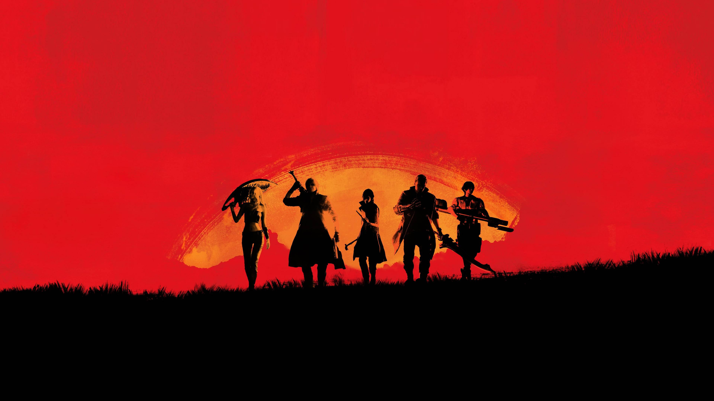
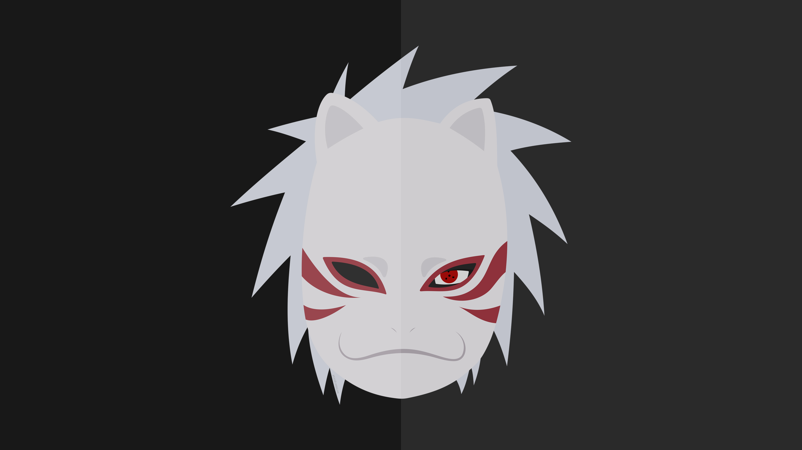
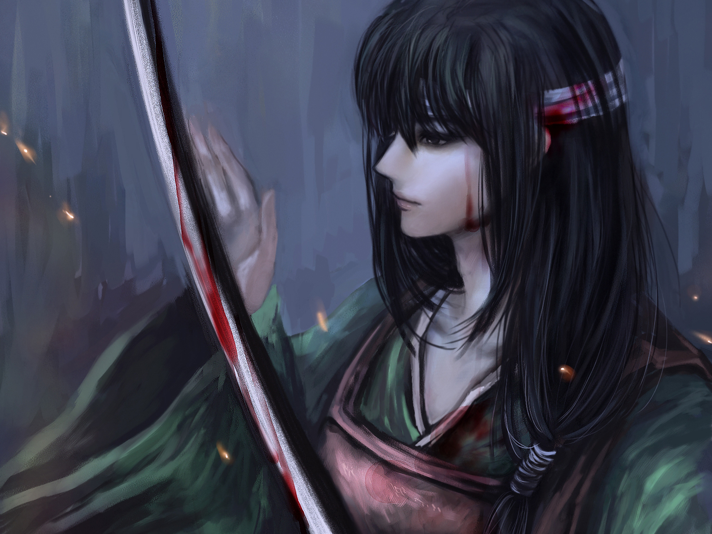

|

Haoshoku Haki
Haoshoku Haki is a rare form of Haki that allows the user to exert their own willpower over others.
This type of Haki cannot be attained through training; it is a power that one must be born with. Only one in
several million people are born with this ability.
It is said that whoever possesses this type of Haki has the qualities of a king.
Haoshoku Haki is considered an extremely dangerous threat and a highly valuable asset by powerful groups such as the Marine Admirals and the Yonko.

Akatsuki
The initial concept of Akatsuki was devised by Black Zetsu as part of its plan to revive its mother, though it pretended the idea came from Madara Uchiha.
Akatsuki was originally founded by Yahiko during the Third Shinobi World War alongside his childhood friends, Nagato and Konan. As citizens of Amegakure
who had been orphaned by the Second Shinobi World War, the three created Akatsuki as a way to bring peace to their home country, which too often got caught
in the crossfire of the Five Great Shinobi Countries' many conflicts.[2] In time, the three were approached by Tobi, who introduced himself as Madara Uchiha.
[3] Tobi claimed Nagato was the reincarnation of the Sage of Six Paths and offered to teach him to control the power of his Rinnegan, though Yahiko distrusted
him and prompted Nagato to turn down his offer.[4] Nevertheless, Tobi would later claim that it was he who encouraged Yahiko to form Akatsuki, unbeknownst to
Konan.
Akatsuki's desire for an end to war attracted many fellow Ame ninja to their cause and, in time, word of their exploits began to travel beyond Amegakure's
borders. Akatsuki's early fame was owed largely to Yahiko's leadership and his natural charisma, which kept the group united and motivated them to persevere
despite the difficulties of their goal. Yahiko, however, viewed himself as merely a facilitator for Nagato, who would ultimately be the actual source of world
peace because of his Rinnegan. Ame's leader, Hanzō, also became aware of Akatsuki and perceived them as a threat to his rule, a belief encouraged by Danzō Shimura
in the anime. Hanzō approached Akatsuki offering to help them broker peace between Konohagakure, Iwagakure, and Sunagakure. When Yahiko, Nagato, and Konan arrived
to meet with him, however, they were ambushed by Hanzō's men and members of Danzō's Root, who took Konan hostage and forced Yahiko to commit suicide in order to save her.
Enraged by Yahiko's death, Nagato summoned the Demonic Statue of the Outer Path and used it to slaughter their attackers, though Hanzō himself escaped.
In the anime, the other members of Akatsuki were tipped off to Hanzō's plan and attempted to provide backup to Yahiko and the others. Tobi and Zetsu
intercepted them and after a long battle, Tobi killed the remaining members of the group.

Old Jouishishi
Twenty years before the present, the Bakufu was resistant to the arrival of the Amanto, but they were confronted with the Amanto's superior technology and weapons.
When the 12th Shogun collapsed due to anxiety, Tokugawa Sada Sada took the position of Shogun and welcomed the Amanto to their country.
Some samurai within the country were against this and lost faith in the Bakufu, calling them traitors. This caused a long civil war called the Joui Wars which
lasted for about 10 years.
Those who participated in the Joui War were known as the Old Joui Patriots.Zehan was one of them.
|